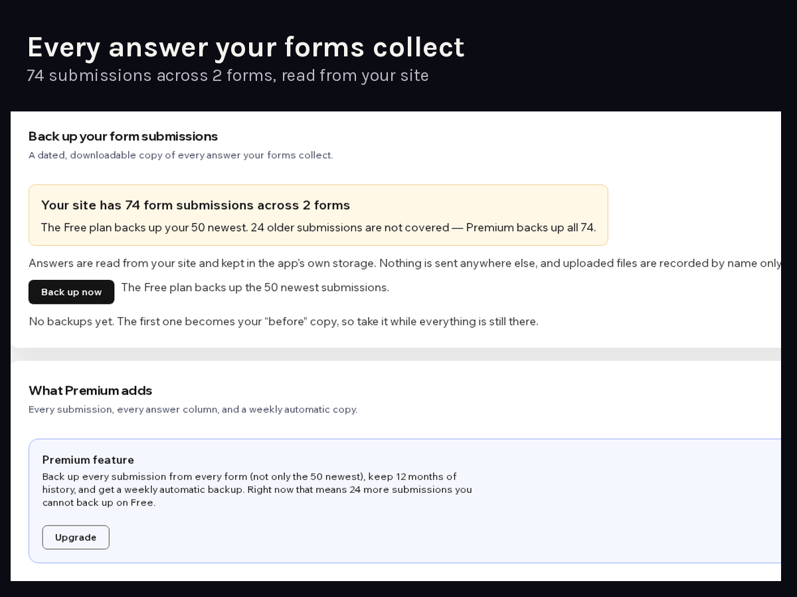

Form Backup: Submission Export
Every form answer saved to a CSV you can keep
- Every answer column in one dated CSV
- What changed since your last copy
- Free backs up the 50 newest submissions
- Premium keeps 12 months and copies weekly

What it does
Your form answers live in one table that anyone with dashboard access can edit or empty. The Forms table exports a filtered list by hand, and deleted submissions sit in a trash that empties after 180 days. Nothing keeps a dated copy, and nothing tells you what changed between two exports.
This app makes a dated copy of the whole submission table and keeps it in the app's own storage, inside your site. It reads the submissions and the form names from your site's own services, so no account is needed and no file leaves your computer. Each copy stores every answer column the forms collect: text, numbers, choices as their display names, and uploaded files recorded by name only, never as bytes.
Every copy is compared with the one before it, so the history lists new, missing and changed submissions at a glance, and any kept copy downloads as a CSV with one row per submission and its form name.
The free plan backs up the 50 newest submissions. Premium backs up every submission from every form, keeps 12 months of history, and takes a weekly automatic copy the first time you open the page after seven days. Premium is $6 a month, or $5 a month billed yearly, with a 14-day free trial.
Price
Free
- The 50 newest submissions
- Every answer column in the CSV
- The 2 most recent copies kept
- Change list against the previous copy
Premium
$6/month, or $5/month billed yearly ($60/year), 14-day free trial
- Every submission, every form
- 12 months of backup history
- A weekly automatic copy
- CSV download of any kept copy